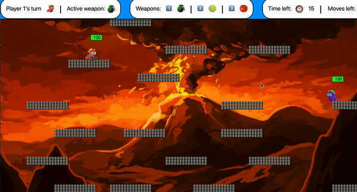

2d game inspired by Team17's Worms (GitHub Repo)
Created from start to finish in 2 weeks using JavaScript, p5, Matter.js, Express, Node, HTML, CSS. This group project (team of 6) was our first attempt at creating a game. We opted for a browser game, allowing players to play 1v1 against each other locally.
We used pair programming and a Spike and Stabilize approach for the duration of the project.
Using Matter.js and p5 we implemented physics in the game. This includes moving, shooting, weapons that fire different projectiles, desctructible terrain, and collisions between projectiles and worms.
Deployed on Heroku Play here!